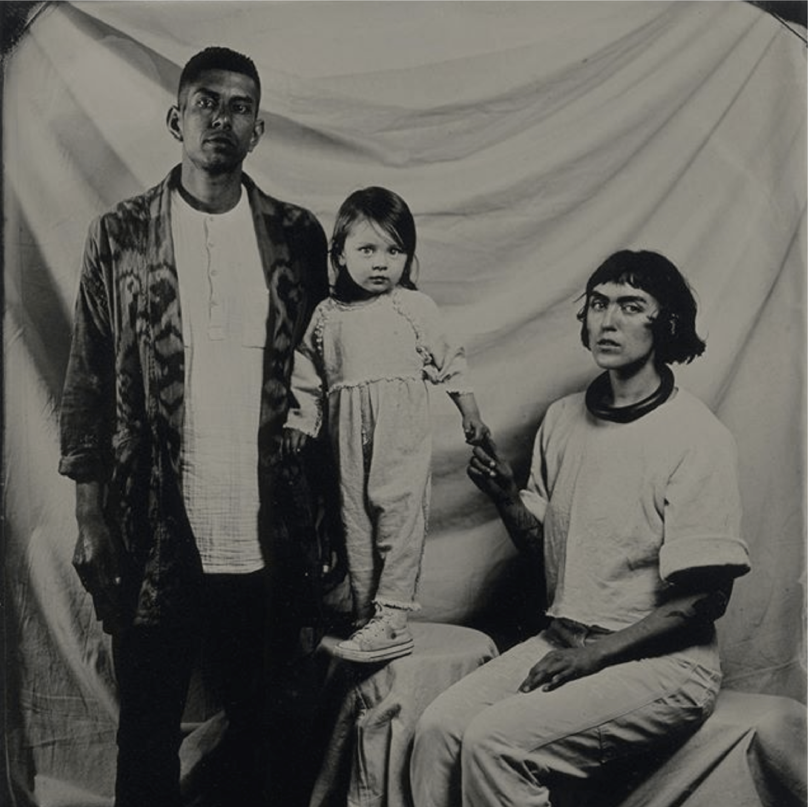
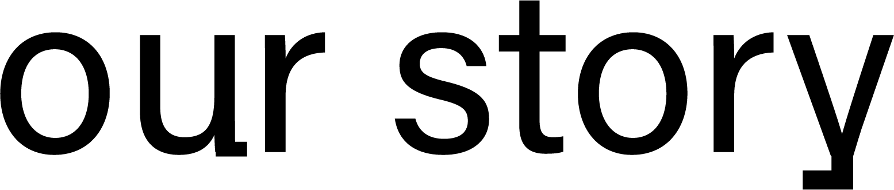
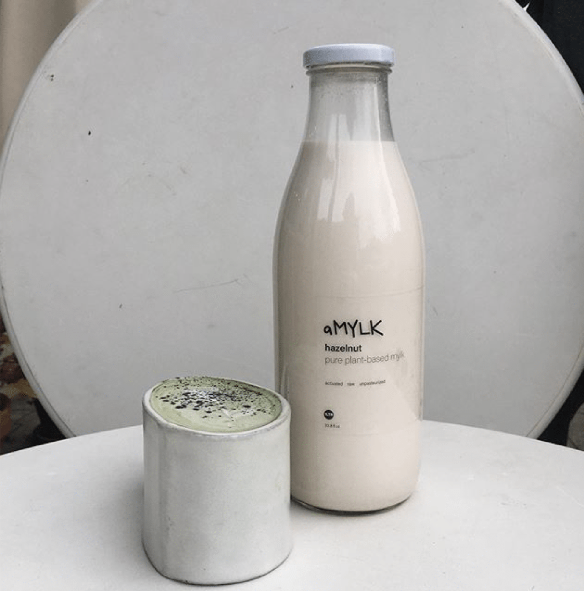

I googled how to announce your company’s rebrand.
I’m still not sure what to say, but wow we are excited.
This name has been in our hearts since the first calling to open a shop in the spring of 2019.
We were both working part time gigs, I (Lindsey) had just cut out caffeine and sugar, for my shot adrenals, nervous system, and candida. I was feeling the loss of the routine, and it became clear to me what we needed to do. Open a shop focused on healing, a connected space, medicinal, plant & impact focused. A shop where you could get a medicinal mushroom latte or an organic plant mylk without added sugar.
This shop fell into our laps well before we were actually “ready” to be business owners, and we dove in head first. We have learned a lot and grown so much, we are grateful for what Kiosko has given us the chance to build.
A little over a year later we are so proud to introduce you all to Pájaro. Named for our bird, Pablo.

Hola! We have been wanting to jump on here and introduce ourselves! We are the Landaverde family, Rogelio, Lindsey & Pablo the new, excited, and very proud owners of Kiosko Coffee.
A little about us, we met in North Oakland in a coffee shop Rogelio was managing.
Lindsey was working as a print designer in San Francisco and happened to move onto the block where Rogelio was working. We fell in love and started our family what felt like immediately.
Rogelio has spent the last two years as a stay at home father to our baby bird Pablo. Previous to that he’s worked in coffee 7 years, preformed beatbox & theater. You all have probably seen Rogelio working at either La Perlita or Kiosko as he started as hourly in March.
This cafe is something we’ve been talking about casually for the past few years and more intentionally the past 10 months, we are so honored to have this opportunity to continue growing what was started with Kiosko. This is our fourth weekend and it still doesn’t feel entirely real but we are so grateful!
We can’t wait to meet you all!
Be well,
Rogelio, Lindsey, & Pablito
